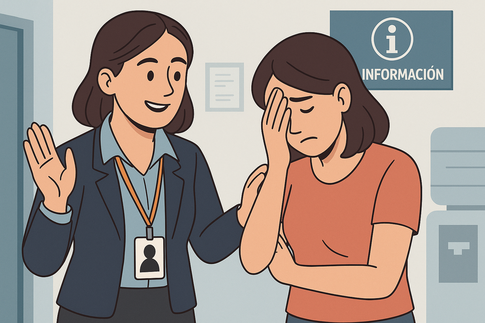

¿Estás viviendo una situación de violencia?
Los siguientes tipos de violencia que pueden activar el Mecanismo:
Avancemos para conocer los pasos que debes realizar
Cuando identifiques una situación de violencia, debes acudir a las entidades responsables en tu municipio según el tipo de ayuda que requieras:
| Tipo de ayuda | Entidad que debes buscar | ¿Qué pedir? |
|---|---|---|
| Salud | Hospital / IPS / Secretaría de Salud municipal | Atención médica, registro de lesiones, orientación psicológica. |
| Protección | Comisaría de Familia / ICBF | Medidas de protección, separación del agresor, custodia. |
| Justicia | Policía / Fiscalía | Denuncia formal del caso, inicio de investigación penal. |

Por que te paso alguna de las siguientes situaciones:
Se sugiere acudir al municipio con el fin de identificar la entidad responsable del Mecanismo Articulador Municipal y/o del Comité de Salud Mental, Convivencia Social y Abordaje de Violencias Basadas en Género. Una vez identificada, podrá solicitar la realización de un estudio mediante sala situacional, con la participación de todas las entidades competentes para atender y dar solución a su solicitud, en calidad de primeros responsables.
En caso de contar con trazabilidad que evidencie la ausencia de respuesta por parte de esta instancia, podrá elevar su requerimiento al Mecanismo Articulador Departamental mediante el correo: mujer.mecanismoarticulador@boyaca.gov.co
Tu caso será evaluado por la Secretaría Técnica y convoca una reunión con todas las instituciones que deben dar respuesta.(Justicia, Salud, Protección) para garantizar una solución.
Las autoridades hacen seguimiento mensual hasta resolver el caso y garantizar tus derechos.